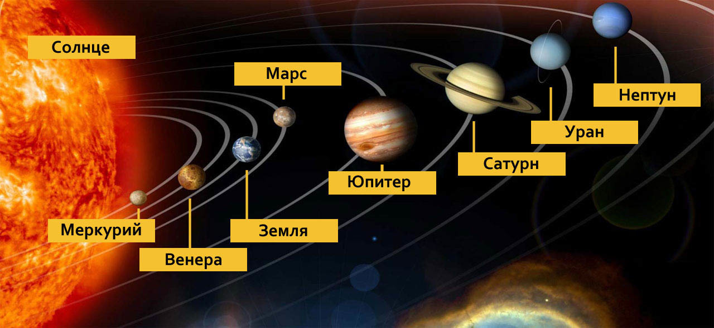
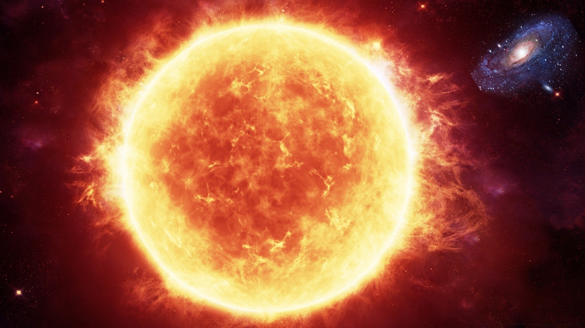

Солнечная система
Открыть карту солнечной системыСолнечная система — звёздная система в галактике Млечный Путь, включающая Солнце и естественные космические объекты, обращающиеся вокруг него: планеты, их спутники, карликовые планеты, астероиды, метеороиды, кометы и космическую пыль.
Строение Солнечной системы
В состав солнечной системы входит восемь основных планет вращающихся приблизительно в одной плоскости. По своим физическим свойствам планеты делятся на земную группу и планеты-гиганты.
Планеты-гиганты во много раз больше других планет, они состоят из газов и льда. Это:
Пространство между орбитами Марса и Юпитера, а также за Нептуном (пояс Койпера) занимают малые небесные тела: малые планеты и астероиды. Также по пространству Солнечной системы курсируют кометы и потоки метеороидов.
Солнце
Звезда класса «жёлтый карлик». 98% массы Солнца приходится на водород и гелий, но в нём также содержатся все известные химические элементы. Солнце ярче, чем 85% звёзд в галактике, а температура его поверхности превышает 5 700°C.
Солнце почти в 110 раз больше Земли, а его масса в тысячу раз превосходит массу всех планет, вместе взятых. Именно благодаря солнечному свету и теплу на Земле существует жизнь.
